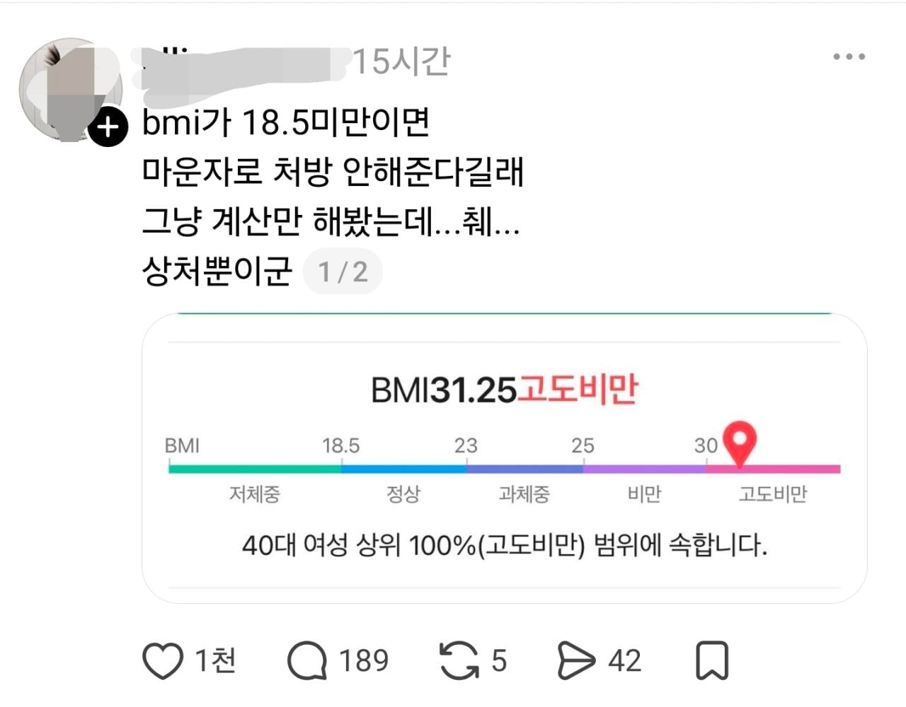

ㅋㅋㅋㅋㅋㅋㅋㅋㅋㅋㅋㅋㅋㅋㅋㅋㅋㅋㅋ

ㅋㅋㅋㅋㅋㅋㅋㅋㅋㅋㅋㅋㅋㅋㅋㅋㅋㅋㅋ
콜센터에서 일해본적 있는데 왜 때문인지 고도비만들이 그렇게 많드라
ㅇㅇ걍 온동네 여자멧돼지는 다 모아놨더라 ㅋㅋㅋ 나도 첨에 신기했음

외모 안보여도되는데 스트레스 존나받으니 폭식으로 이어지는건가 싶던
근무환경상 활동량 거의0 일단 화난 민원인들상대하니 정신적스트레스 폭증 여초직장이라 간식 상대적으로 많이챙겨옴으로 살찔수밖에
신기한게 그런 사람들이 또 목소리는 좋은사람 많더라
목소리는 뱃심에서 나오니까
개콘 이수지
겨울철 대방어 아줌마 ㄷㄷㄷㄷㄷ
저걸 해봐야 아나 ㅋㅋ
고급휘발유 넣어봤어요?
고도 비만이 되어 봤냐구요?
유정이 귀여워
40대/165cm/85kg 하면 딱 저 정도 나오네...
와 아줌마 몸무게가 나랑비슷하네
시도는 좋았다
ㅋㅋㅋㅋㅋㅋㅋㅋㅋㅋ
코이츠 자기 객관화는 되어있는ㅋㅋㅋ
되어있는데 왜 넣어보죠??낄낄
25 미만이 아닌게 신기한데 ㅋㅋ
사실 요즘은 저런거 검사안하고 그냥처방해줌 ㅋㅋㅋ
18.5 개빡센 수치네 키-110해도 안되네
저런사람들을 위한 약이야
얼른맞고 건강해집시다
난 41이었다는거임
지금은 27
평균이 22~24라는데 30만되도 장난 없이 무거워지네 ㄷㄷ
내가 작년 추석때 10키로찌고 뺄라고 하루에 20키로씩 뛰다가 3월에 무릎연골판찢어지고 에라 운동포기하고 먹자 했더니
작년82 ~ 지금138 됨
좆됨
콜센터에서 일할 BMI인데